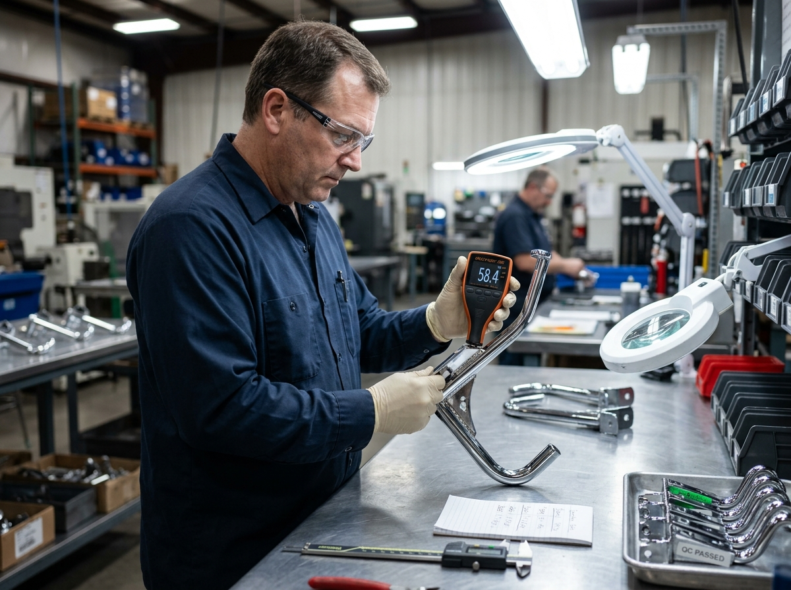

高すぎるMOQ（最小発注ロット）
1型番あたり数百台を要求される大量生産モデルでは、数店舗の新規出店や催事用什器に対応できず、過剰在庫と初期投資リスクを招きます。
B2B SOURCING WHITE PAPER
海外ブランド担当者・店舗開発マネージャー・VMDが直面する「過度なMOQの壁」「納期の不透明さ」「仕上がり精度の不安」を、台湾Big Fameの精密什器エンジニアリングが解決します。
画一的な大量出店から、ブランド世界観を体現するコンセプト旗艦店、期間限定ポップアップ、百貨店インショップへと出店形態が多様化しています。しかし従来の大型什器工場は、この柔軟な変化に対応できていません。
1型番あたり数百台を要求される大量生産モデルでは、数店舗の新規出店や催事用什器に対応できず、過剰在庫と初期投資リスクを招きます。
遠隔地の大量生産工場では、金属パイプの溶接ビード処理や粉体塗装の均一性、木工やアクリルとの嵌合公差でトラブルが頻発しがちです。
ブランド独自の意匠・機構が組み込まれた陳列什器は、適切な守秘管理と知財保護体制が敷かれた工場で製作される必要があります。

営業仲介を挟まず、什器製造の熟練エンジニアが直接図面をレビュー。構造強度の最適化、パイプ肉厚の選定、組立工数の削減案をスピーディーに提案します。

手書きスケッチや寸法データから、実店舗で使用できる1:1機能試作品を迅速製作。工場内で仮組みを行い、動画・写真で検証してリスクをゼロにしてから本生産に進みます。
ブランドの出店計画に合わせて、無駄のないステップ・バイ・ステップの製作を実施します。
数量： 1〜2台
目的： 構造強度検証、商品陳列テスト、仕上げ色サンプル確認、組立性の検証。
数量： 10〜50セット
目的： 旗艦店オープン、百貨店コーナー、催事ポップアップツアー向けの迅速導入。
数量： 100セット以上
目的： 標準モジュール化によるコスト削減、段階的納品、輸出用ノックダウン（組立式）梱包。
台湾は精緻な金属加工技術、知的財産保護、直接的で透明な技術コミュニケーション、そして1台からの実寸試作や10〜50台の小ロット生産に対する柔軟な対応力に優れているためです。
製造図面の確定後、実寸機能試作品は約7〜14営業日で製作し、工場内での仮組み検証および写真・動画確認を経て出荷手配が可能です。
はい、可能です。Big Fameではブランド旗艦店や百貨店コーナー、ポップアップ催事向けに特化した小ロット生産ラインを整えており、無理な大量発注を求めることはありません。
手書きスケッチ、2D/3D図面、または既存の参考写真をお送りください。台湾のBig Fame技術チームが48時間以内に構造検討と概算見積もりをご案内します。
特注什器の相談・試作依頼を送る